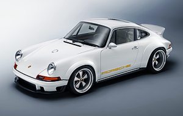
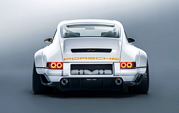
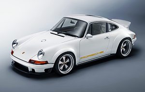
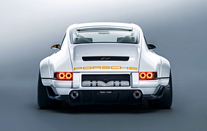

PORSCHE
SINGER
964 Dynamic & Lightweight Study
The Singer - Williams DLS Goodwood is the ultimate carbon fiber vision of a 1990 Porsche 964 made by restorers at Singer Vehicle Design, partnering with the racing firm Williams Advanced Engineering.
DETAILS 


